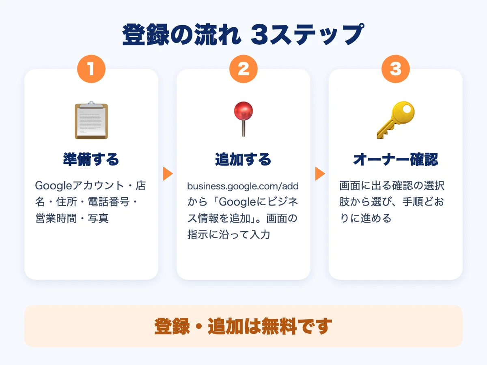

Googleビジネスプロフィールの登録のやり方｜東大阪のお店向け・手順と準備

「東大阪 美容室」「小阪 整骨院」のように、地名とお店の種類で探す人は、Googleマップを見ながらお店を決めることが多くなっています。そのとき、お店の情報が載っているかどうかで、見つけてもらえるかが変わります。この記事では、Googleマップにお店を載せる「Googleビジネスプロフィール」の登録のやり方を、東大阪のお店向けに、手順の順番でまとめます。
- 登録は3ステップ。「準備する → 追加する → オーナー確認」の順に進める
- ビジネスの追加や申請は、無料でできる
- 登録したら、住所・電話・営業時間を、ホームページと同じ表記にそろえる

Googleビジネスプロフィールとは
お店や会社の情報を、Google検索とGoogleマップに載せるための仕組みです。プロフィールを追加して、オーナー確認を済ませると、お客様がGoogle検索やGoogleマップで、あなたのお店を見つけられるようになります。登録そのものは無料です。
登録の前に、準備するもの
画面の途中で止まらないように、先に次のものをそろえておくと、スムーズです。
| 準備するもの | ポイント |
|---|---|
| Googleアカウント | お店の連絡用など、長く使うものを用意する |
| 店名（屋号）・住所・電話番号 | 看板や名刺と同じ表記にする |
| 営業時間・定休日 | 曜日ごとに決めておく |
| 写真 | 外観・内観・商品やメニューなど。スマホでの撮り方も参考に |
登録の手順（はじめてお店を追加する場合）
Google公式のヘルプでは、次の流れが案内されています。
- 「business.google.com/add」を開く
- 「Googleにビジネス情報を追加」を選ぶ
- 画面の指示に沿って、ビジネスの詳細（店名・住所・電話など）を入力する
- 確認のオプションを選び、画面の手順どおりに設定する（オーナー確認）
すでにGoogleマップに出ているお店の場合
自分で登録していなくても、お店がGoogleマップに表示されていることがあります。その場合は、新しく作るのではなく、そのビジネスの管理を始める形で進めます。
- Googleマップで、店名と地域（例：東大阪市小阪）を入れて検索する
- お店の情報に表示される「ビジネス オーナーですか？」を選ぶ
- 「管理を開始」を選ぶ
- 確認のオプションを選び、画面の指示に従う
同じお店を、二重に作らないように注意してください。
登録したあとに整えること
- 住所・電話・営業時間を、ホームページと同じ表記にそろえる：「5丁目7-20」と「5-7-20」のような細かい違いも、そろえておくと安心です。詳しくはホームページとGoogleマップの関係をご覧ください。
- 写真を追加する：入口の様子や、店内の雰囲気が伝わる写真があると、初めての方も安心して来店できます。
- 変更はすぐに直す：臨時休業や営業時間の変更は、お客様の来店に直結します。変わったら、早めに更新しましょう。
小阪・布施・八戸ノ里・河内小阪のお店なら、地域で見つけてもらうホームページのコツもあわせてご覧ください。
RAIZONでは
RAIZONは、東大阪市の下小阪を拠点に、地域の事業者さんのホームページを月額制で制作しています。初期制作費は0円、月額9,800円（税抜）で、Googleマップとの連携や、月4回までの修正・更新を含みます。最低契約期間はありません。ホームページとGoogleマップを同じ内容にそろえるところから、お手伝いします。なお、検索での順位や集客を保証するものではありません。
よくある質問
登録に費用はかかりますか？
ビジネスの追加や、オーナーとしての申請は、無料です。
オーナー確認は、どんな方法がありますか？
確認のオプションは、登録の途中の画面に表示されます。表示された方法から選び、画面の手順に従ってください。方法や画面は変わることがあるので、最新の案内は公式ヘルプで確認しましょう。
ホームページがなくても、Googleマップに載せたほうがいいですか？
載せておくと、地図から見つけてもらえる機会が増えます。そのうえで、営業時間やメニュー、料金を詳しく伝えるために、ホームページも用意しておくと安心です。
どこから相談すればいいですか？
登録の進め方で迷ったときは、お問い合わせフォームから、お気軽にご相談ください。
ほかのコラム
 制作の基礎
制作の基礎東大阪の飲食店のホームページに載せたい7つのこと｜メニュー・地図・予約
東大阪の飲食店がホームページを作るとき、載せておきたい情報を7つに整理しました。メニューと料金、営業時間、行き方、写真、予約・問い合わせ、お店の紹介、お知らせの載せ方をやさしく解説します。
 制作の基礎
制作の基礎ホームページ制作の流れ｜相談から公開までの4ステップと準備するもの
ホームページ制作の流れを、お問い合わせ・ヒアリング・制作と公開・公開後のサポートの4ステップで解説します。事前に準備しておくものや、制作期間中の費用の考え方もわかります。
 集客・運用
集客・運用小阪・布施・八戸ノ里のお店のホームページ｜地域で見つけてもらう5つのコツ
東大阪の小阪・布施・八戸ノ里・河内小阪で、お店や会社のホームページを作るときのコツを5つにまとめました。地域名の入れ方、Googleマップとの連携、写真、問い合わせ導線までやさしく解説します。